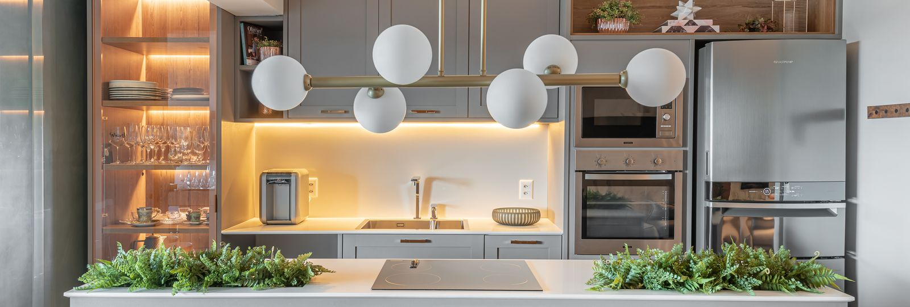

Gilvan Reformas
Cuide do que é importante pra você enquanto o Gilvan cuida da execução da sua obra. Profissional experiente, com processos rápidos, seguros e compromisso de verdade com o resultado.
Solicitar orçamentoPara pequenos reparos, reformas ou obras completas, conte com o trabalho dedicado do Gilvan. O foco dele está em qualidade, honestidade e segurança em cada serviço prestado.
Instalação e acabamento de pisos em geral: porcelanato, cerâmica, laminado, vinílico e mais. Gilvan executa cada etapa com cuidado e qualidade profissional.
Desde a troca de revestimentos até mudanças completas em ambientes. Gilvan realiza reformas com atenção nos detalhes e compromisso com o que foi combinado.
Pequenos reparos, acabamento fino, rejuntes, nivelamento e manutenção de áreas. Tudo feito com capricho, como se fosse na casa dele.